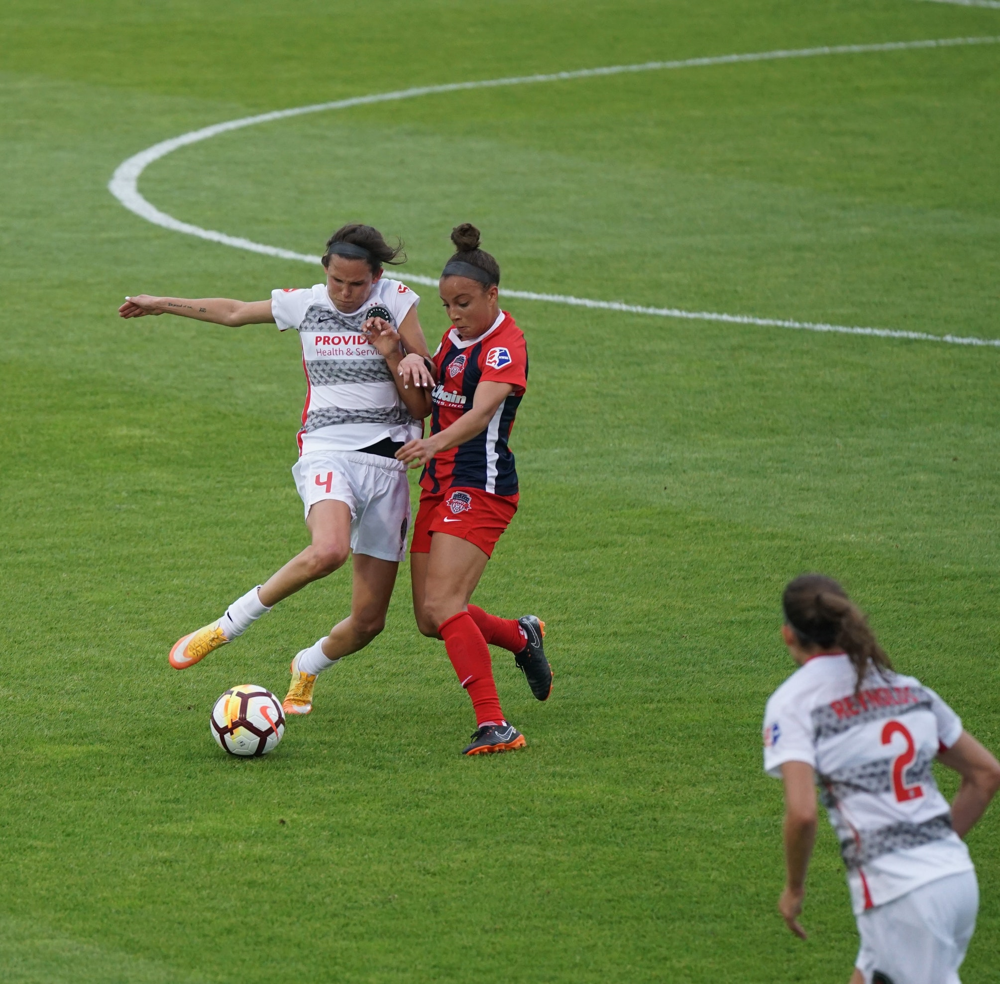
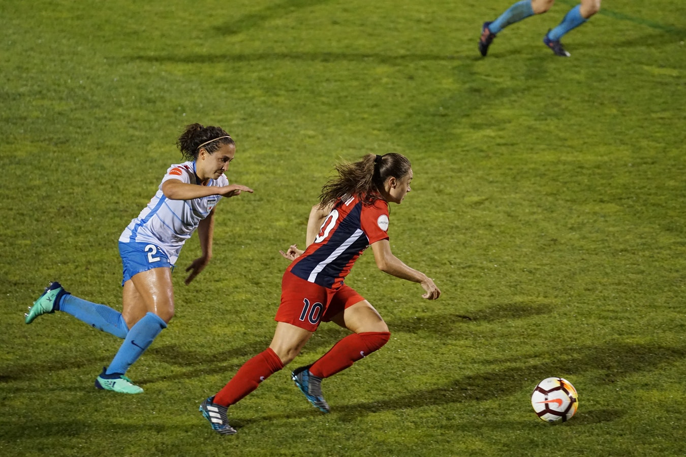

Skills and Drills
If you want to discover new skills to improve your ball skills or learn new practice drills to help you become a better player, then look no further!
- Passing
- When passing the ball, you can use the inside, outside, or top of your foot. You want to kick it with enough power to get the ball to the person receiving the pass. If it has too much power, or if it has too much power, it may be stolen by a member of the opposing team.
- Shooting
- To shoot a powerful ball, you will first want to run up to the ball. This momentum will carry into the ball giving your shot more power. When you are running up to the ball, you will want to plant the opposite foot than the one you are kicking with beside the ball, pointing in the direction you want the ball to go. You want to strike the ball in the center if you want to avoid having the ball spin. When you strike the ball, you want to kick it with the instep of your foot. This is about the middle of your foot and it is also the part of the foot that has the greatest bone density. Once you strike the ball, you want to follow through with your leg towards your target.
- Dribbling
- When dribbling the ball down the field, you will want to use the inside, outside, or top of your foot. You want to hit the ball with just enough power to send the ball forward a few feet in front of you. The faster you are running, the harder you will have to hit the ball. A tight, controlled dirbble will prevent defenders from stealing the ball from you.